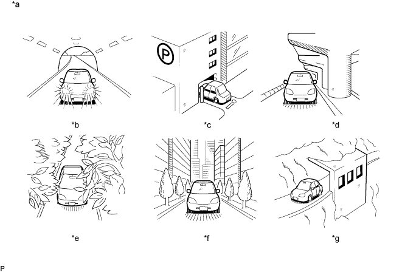

Убедитесь в том, что автомобиль не находится в зоне плохого приема сигналов GPS. Если автомобиль находится в таком месте, переместите его и проверьте, появляется ли метка GPS.
- УКАЗАНИЕ:
- В системе GPS используется 24 спутника, двигающихся по 6 орбитам. В любой момент времени автомобиль получает сигнал, как минимум, от 4 спутников. Несмотря на это, сигналы GPS могут быть не приняты из-за окружающих условий, направления движения автомобиля и времени. См. рисунки ниже.

Обозначения на рисунке
*a
| Пример
| *b
| В туннеле
|
*c
| В здании
| *d
| Под переездом
|
*e
| В лесу или на дороге, обсаженной деревьями
| *f
| Среди высоких зданий
|
*g
| Под утесом или выступом
| -
| -
|
- OK:
- Метка GPS отображается.